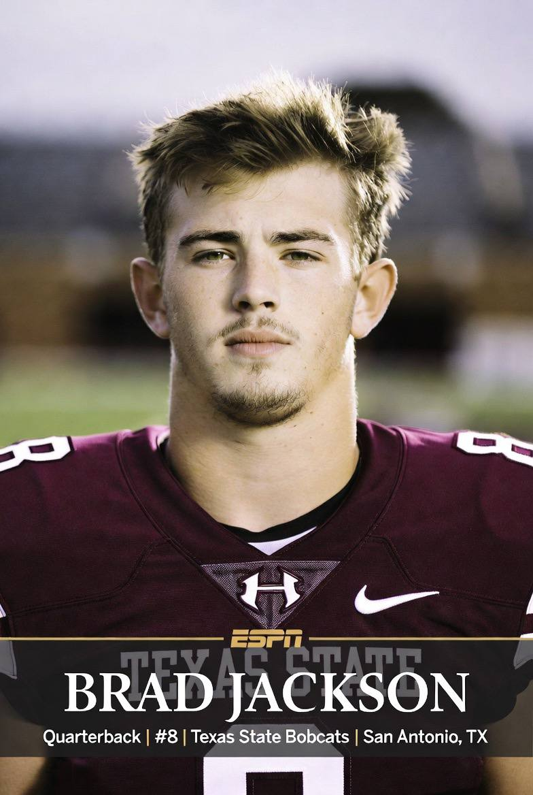
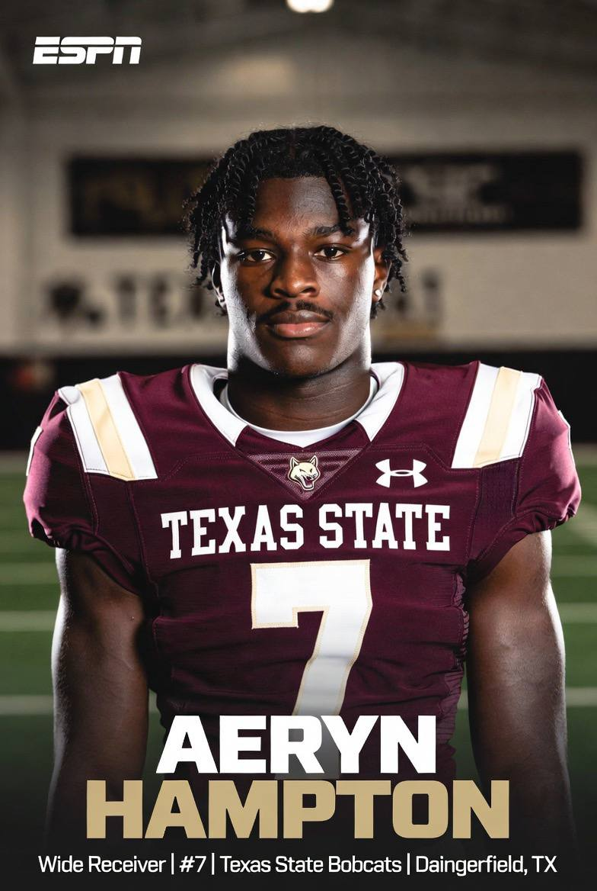
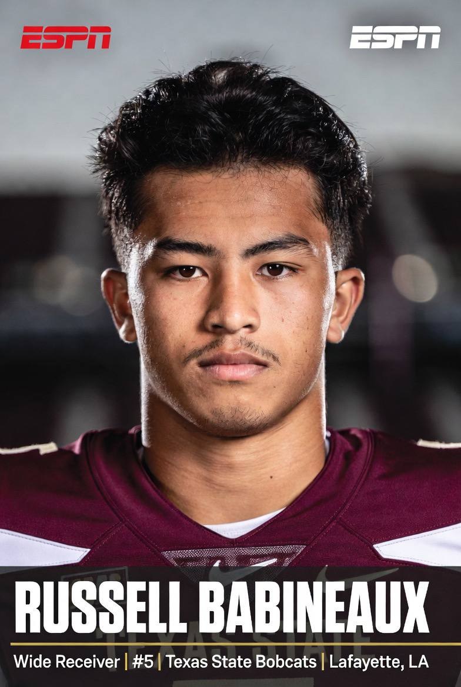
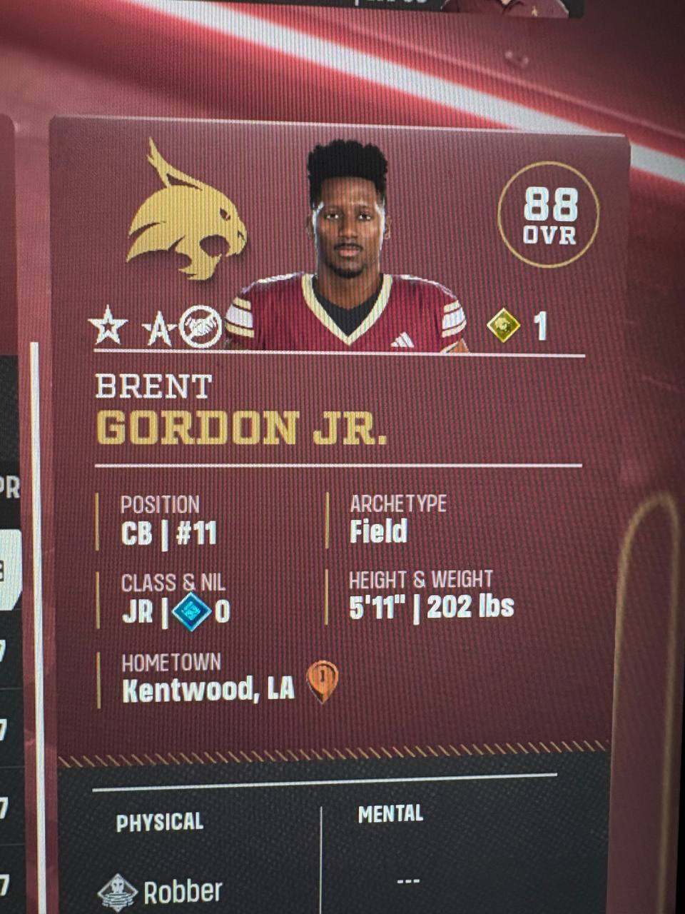

It began, as all great football announcements now do, on alexjoneslive . com. Fog machines. A single bald eagle perched on a squat rack. And behind the desk, drenched in studio light and what he described as "raw, uncut, filtered Texas testosterone," first-year Texas State head coach Alex Jones unveiled the 2026 Bobcats to a rabid streaming audience — and immediately declared war on the swamp.
"The globalists thought I'd fold," Jones bellowed, slamming a jar of victory supplements onto the desk. "They said Texas State was a bus stop. I say Texas State is the LAST FREE PROGRAM on planet Earth. And it starts with the bravest man in the sport."
The QB1 Who Refused the Bag
That man is redshirt junior quarterback Brad Jackson (87 OVR), a 6-foot, 199-pound Pure Runner out of San Antonio who did the unthinkable in the modern era: he returned to San Marcos for ZERO dollars of NIL money.
"Folks. FOLKS. He took NOTHING," Jones roared, eyes wild, holding Jackson's contract to the camera. "In an age where they PAY these kids to sit still and stay docile — this young patriot said NO. He said, 'Coach, I don't want their globalist money. I want to WIN.' That is the single most rebellious act I have ever witnessed in American athletics."

Jones was quick to connect Jackson's sacrifice to the rest of the roster's math. According to the coach, Jackson taking nothing is precisely what freed up the budget to give speedster receiver Kyler Evans (81 OVR) his payday.
"You want to understand how the money REALLY moves? One man's sacrifice becomes another man's opportunity. Brad Jackson took zero so Kyler Evans could eat," Jones explained, drawing a chaotic flowchart on a whiteboard that connected Jackson's name to Evans's with a red string. "That's not a coincidence, folks. That's TRICKLE-DOWN PATRIOTISM. That's the system working the way the founders intended."
The Skill Positions: Loaded at WR, Terrified at RB
The receiver room, Jones admits, is where the value is. Elusive route runner Kylen Evans (81 OVR) leads the corps alongside Kyler Evans (81 OVR) — the man Jackson's $0 sacrifice funded. Then come the two transfer-portal bargains Jones calls "red-pilled and open downfield": gadget weapon Aeryn Hampton (83 OVR), a 5-foot-10 Side-Step artist out of Daingerfield, TX, and fellow gadget threat Russell Babineaux (76 OVR) out of Lafayette.
"Aeryn Hampton — 83 overall, came through the Portal, and the mainstream media doesn't want you to know his NAME," Jones said, jabbing the camera. "He can line up anywhere. Jet sweep, reverse, wheel route — that's not a gadget, folks, that's a PSYOP against the defense. And the globalists are TERRIFIED of a man who moves that fast."


Then the coach's voice dropped. The eagle screeched. And Alex Jones addressed the elephant in the film room: the running back depth chart.
"We have THREE running backs. Three," Jones whispered, before erupting. "THREE, folks! You know who else limits your options to three? THE GLOBALISTS. We are one hamstring away from the ABYSS. And Torrance Burgess Jr. — great kid, 81 overall, safety valve, my guy — that man is going to be in a WHEELCHAIR by the bowl game if the deep state has anything to say about it. They'll run him into the DIRT!"
Burgess Jr., a 5-foot-8 senior out of Pearland, is expected to shoulder a massive workload out of the backfield. Jones has reportedly ordered "filtered spring water IVs" installed on the sideline for him specifically.
"We are one hamstring away from the abyss at running back. Pray for Torrance. PRAY for him."— Alex Jones
The Weakness They Don't Want You to See: The Interior O-Line
In a rare moment of tactical honesty, Jones conceded the Bobcats have a genuine vulnerability — and, naturally, blamed shadowy forces.
"The interior offensive line. That's the soft spot. That's where they'll attack," Jones said, leaning into the camera. "Can we make it work? CAN WE MAKE IT WORK? I've got a Pure Power edge in Phillip Bradford — 83 overall, 6-6, 311 pounds of Louisiana FREEDOM — but he plays DEFENSE, folks. My interior line is held together by grit, prayer, and creatine. If it collapses, it's not a coaching failure. It's SABOTAGE."
The 2026 Bobcats — Key Personnel
QB Brad Jackson (87) — Pure Runner · Option King · Field General · $0 NIL patriot
HB Torrance Burgess Jr. (81) — Backfield Threat · Safety Valve · one of only 3 RBs
WR Aeryn Hampton (83) — Gadget · Portal bargain · Side Step
WR Kylen Evans (81) — Elusive Route Runner · Cutter
WR Kyler Evans (81) — got the payday Jackson's sacrifice funded
WR Russell Babineaux (76) — Gadget · Portal bargain
LEDG Phillip Bradford (83) — Pure Power · anchor of the "stout" D-line
REDG Javante Mackey (80) — Edge Setter · Option Disruptor
DT Kaleb James (78) / DT CD McFee (78) — Pure Power · Workhorses inside
WILL Ayden Jones (80) — Thumper · WILL Wyatt Simmons (76) — Lurker
CB Brent Gordon Jr. (88) — Robber · top-rated Bobcat, "came west from Louisiana"
CB Leroy Bryant (78) / CB Peyton Morgan (76) — Field · Robbers
K Max Cisco (82) — Power · freshman leg out of Forney, TX
The Defense Will Win Games — And Expose the Refs
If the offense is a high-wire act, Jones insists the defense is the foundation of the resistance. Up front he touts a "stout" line: edge-setter Javante Mackey (80 OVR, Option Disruptor) opposite Bradford, with a pair of 6-foot-4 Pure Power tackles — Kaleb James (78) and 316-pound CD McFee (78) — clogging the interior. Behind them, thumping linebacker Ayden Jones (80) and lurker Wyatt Simmons (76) patrol the second level.
But the crown jewel — and, Jones is quick to note, the highest-rated Bobcat on the entire roster — is versatile lockdown corner Brent Gordon Jr. (88 OVR, Robber), who "came west from Louisiana" to join the cause.
"Brent Gordon Jr. — EIGHTY-EIGHT overall, folks. Higher than my quarterback! A ROBBER. Kentwood, Louisiana. Came WEST to fight the swamp," Jones bellowed, holding up the card. "He can play anywhere in that backfield. Corner, safety, nickel, dime, PENNY if I ask him. Put him next to Leroy Bryant and Peyton Morgan and you've got a secondary the globalist passing game CANNOT penetrate."

"A stout d-line, a stout backfield — folks, that is how you EXPOSE the deep-state refs," Jones continued. "When my defense is on the field, there are no bad spots. There are no phantom flags. Because they know I am watching. I am ALWAYS watching."
And in the event a game comes down to the leg, Jones is a believer in his freshman kicker — Max Cisco (82 OVR), a Power-archetype specialist out of Forney, TX. "Max Cisco. A FRESHMAN. 82 overall. That boy could kick a field goal through the fake news and out the other side," Jones declared.
Press Conference Transcript
Q: Coach, realistically — what's the ceiling for this Texas State team?
"The ceiling? There IS no ceiling, because the ceiling is a globalist construct designed to keep you DOWN. Defense wins us games. That's not a hope, that's a FACT. We will grind, we will expose the refs, and we will make San Marcos the epicenter of the resistance."
Q: Are you concerned about only having three running backs?
"Concerned? I'm TERRIFIED, folks. But fear is just the body telling you the elites are close. We ration the carries, we hydrate Torrance with the good water, and we PRAY. That's the plan. That's the whole plan at RB."
Q: What about the interior offensive line?
"Don't. Do not ask me about the interior o-line on live television. That's exactly what THEY want. Next question."
The Verdict
So what are the 2026 Texas State Bobcats? By Jones's own accounting: an 87-overall patriot quarterback playing for free, a loaded and thrifty receiver room fronted by portal steal Aeryn Hampton, a running back situation held together by faith and one very tired 5-foot-8 senior, a genuinely frightening interior offensive line — and a legitimately nasty defense headlined by 88-overall corner Brent Gordon Jr. (the best player on the whole team), a stout Pure-Power interior, and edge disruptor Javante Mackey. Stout enough, in the coach's words, to "win us games most likely."
"We are undermanned. We are underfunded. And we are UNAFRAID," Jones declared as the stream neared hour three and the eagle finally took flight. "They wrote us off. Good. That's when the resistance does its best work. Texas State Bobcats. Remember the name. The deep state already does."
Kickoff can't come soon enough. The globalists, presumably, still won't see it coming. 🏈🦅